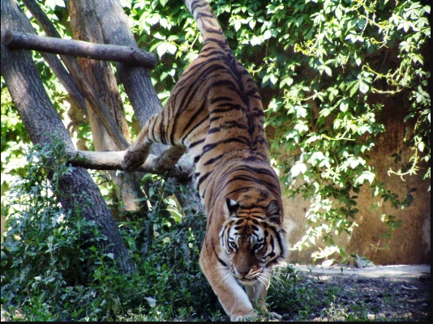
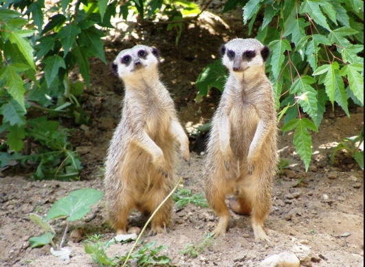

Látnivalók és programok a Hotel közelében Hámori Mászópark, Kohászati Múzeum, Szeleta-Barlang, Miskolci Állatkert, Diósgyőri vár és várfürdő, lillafüredi pisztrángos, újmassai őskohó, szentléleki pálos kolostorrom, Bánkút Síklub.
Közelünkben
Hámori Mászópark
A hoteltől 200 m-re lévő Hámori Mászópark a Bükk hegység természeti képződménye, mely a két falra tagolódik. Anyagát tekintve szálkő, valamint mészkő, változatos, formakinccsel. A mászó falakat az út és a Szinva patak osztja ketté.
Kohászati Múzeum
A 800 m-re található Kohászati Múzeum Felsőhámorban található. A látogatók az igényesen berendezett termekben megismerkedhetnek a hazai vaskohászat hőskorával.
Szeleta-barlang
A 1,5 km-re lévő Szeleta-barlang Miskolc-Felsőhámornál, az országút fölött 96 m magasságban, a hegy gerincén helyezkedik el. A sziklák között meghúzódó barlang a XX. század elején Herman Ottó sürgetésére megkezdett ásatásoknak köszönheti hírnevét. A barlangból, a jégkorszakbeli ősember hasított kőeszközeinek (medve-, oroszlán-, hiéna- és mamutcsontok) tömegét hozták felszínre.
Megközelítése kizárólag gyalogtúrával, de több irányból, Lillafüred, valamint a Csanyik-völgy felől is lehetséges, de legrövidebben a felsőhámori templom melletti lépcsőn, a főút kanyarjában lévő vízmosás mentén, a piros négyzet turistajelzést, a közismert „Ω” barlangjelig követve érhető el. A barlang belső részeinek (kb. 60 méter) megtekintéséhez már elemlámpa szükséges.
Miskolci Állatkert
 A szállodánktól Miskolc irányába 2 km-re található, az 1983 óta működő Miskolci Állatkert (Vadaspark) csodálatos erdei környezetben, rengeteg látnivalóval várja vendégeit.
A 21 hektáron elterülő állatkert közel 150 állatfaj 700 egyedét mutatja be, mind a honos fajok, mind az egzotikus állatfajok képviselőit (tigris, medve, hiúzok, szurikáták, párducok, struccok, majmok, szarvasok, háziállatok, stb.).
Újmassai Őskohó
A szállodánktól Ómassa irányába 4-5 km-re lévő újmassai Őskohót 1770-ben Fazola Henrik építtette a Bükkben talált vasérc feldolgozására. Az olvasztót és a vasverő műhelyt 1813-ban az alapító fia, Fazola Frigyes, építtette. A helyi mészkövet salakképző anyagként, a Bükk erdő fáit pedig a kohók fűtésére használták. A vízikerékkel hajtott kalapács, kovácstűz és fújtató szemlélteti az egykori munkamenetet, az olvasztó történetét pedig a szomszédságában található múzeum kiállítási anyagából ismerhetjük meg.